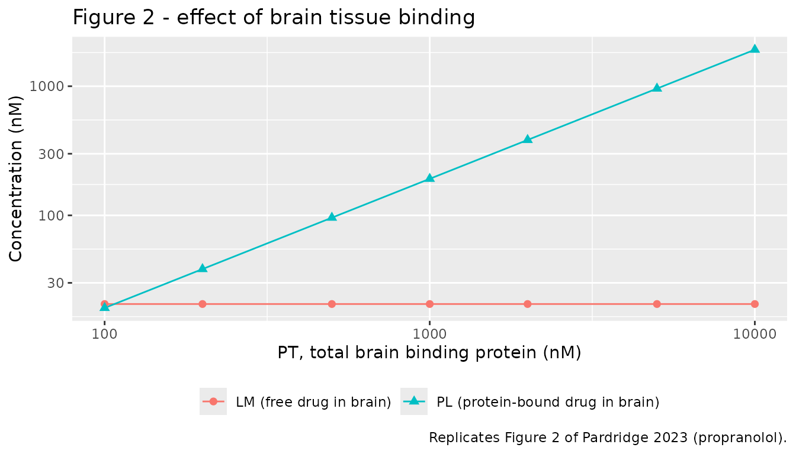
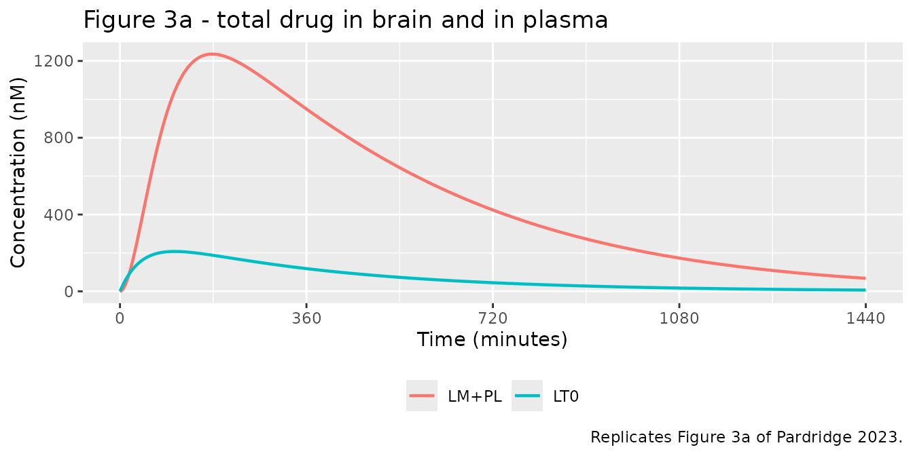
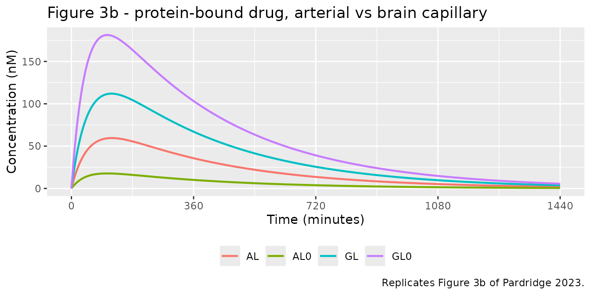
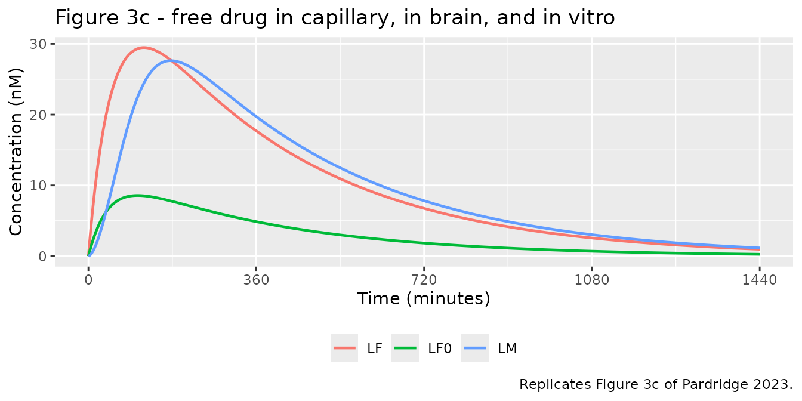

Brain delivery of plasma-protein-bound drugs (Pardridge 2023)
Source:vignettes/articles/Pardridge_2023_brain_plasma_protein_binding.Rmd
Pardridge_2023_brain_plasma_protein_binding.RmdModel and source
- Citation: Pardridge WM (2023). Physiologically Based Pharmacokinetic Model of Brain Delivery of Plasma Protein Bound Drugs. Pharmaceutical Research 40(3):661-674. doi:10.1007/s11095-023-03484-2.
- Article: https://doi.org/10.1007/s11095-023-03484-2
- Supplement (Tables S1 and S2): https://doi.org/10.1007/s11095-023-03484-2 (Supplementary Information)
This paper contributes two models to
nlmixr2lib, one per drug. Both share the same ODE structure
and differ only in their drug-specific parameter values, exactly as the
author built them (Table II has one column per drug):
pro <- readModelDb("Pardridge_2023_propranolol_pbpk")
imi <- readModelDb("Pardridge_2023_imipramine_pbpk")
pro_m <- rxode2::rxode2(pro)
imi_m <- rxode2::rxode2(imi)What the model is for
Standard practice estimates the free (pharmacologically active) drug concentration in brain from the free fraction measured in vitro by equilibrium dialysis of plasma. Pardridge’s model asks whether that is valid when a drug is taken up by brain directly from its plasma-protein-bound pool - so-called plasma-protein-mediated uptake (PMU).
The mechanism is enhanced dissociation: within the brain capillary, contact with the endothelial glycocalyx raises the dissociation constant of the drug-protein complex above its in vitro value, so protein-bound drug becomes available to cross the blood-brain barrier during a single capillary transit without the protein itself leaving the circulation.
-
Propranolol shows modest PMU, from the AGP-bound
pool only (
KGin vivo 19 uM vsKGin vitro 3.3 uM; albumin is unchanged). -
Imipramine shows strong PMU from both the
AGP-bound and the albumin-bound pools (
KG90 vs 1.2 uM;KA>1,000 vs 42 uM).
Population
This is a deterministic simulation study, not a fit to individual data, so there is no study population in the popPK sense: there are no subjects, no inter-individual variability and no residual error. Every parameter is FIXED at a literature value or at a value the author calibrated by simulation.
The parameterisation represents a typical human: plasma albumin 800 uM and AGP 20 uM are human plasma concentrations (Table II, ref 12; the paper also simulates the metastatic-cancer values 600 uM and 70 uM), the in vitro dissociation constants are for human proteins, the total plasma concentration of 100 nM is a human pharmacologic level, and the oral propranolol pharmacokinetics are from human studies of an 80 mg dose in 70 kg subjects.
The species provenance is nonetheless mixed, and this is a genuine limitation rather than an approximation introduced here - see Assumptions and deviations below.
str(pro_m$meta$population)
#> List of 6
#> $ species : chr "human"
#> $ n_subjects : int NA
#> $ n_studies : int NA
#> $ disease_state: chr "Not a fit to individual data. Deterministic simulation of a typical human parameterised from published human pl"| __truncated__
#> $ dose_range : chr "Non-steady-state model: single oral dose of 80 mg propranolol in a 70 kg subject, i.e. 4,600 nmol/kg, simulated"| __truncated__
#> $ notes : chr "Species provenance is mixed and should be understood before reuse. The plasma-protein concentrations (albumin 8"| __truncated__Model structure
Eleven state variables (Table I). The arterial pool
(LT0, GL0, GF0, LF0,
AL0) is at instantaneous binding equilibrium and is
computed algebraically; the brain capillary and
brain pools are the seven ODE states.
| Paper symbol |
nlmixr2lib name |
Meaning |
|---|---|---|
LT0 |
Cc (output) |
Total drug in arterial plasma |
LF0 |
Cu_plasma_invitro (output) |
Free drug in arterial plasma = C_u,plasma,in vitro
|
GL0, GF0, AL0
|
GL0, GF0, AL0 (algebraic,
returned as columns) |
AGP-bound drug, free AGP, and albumin-bound drug, arterial |
LF |
brain_vascular_drug_free |
Free (bioavailable) drug in brain capillary =
C_u,plasma,in vivo
|
GL |
brain_vascular_drug_agp |
AGP-bound drug in brain capillary |
AL |
brain_vascular_drug_alb |
Albumin-bound drug in brain capillary |
GF |
brain_vascular_agp_free |
Free (unbound) AGP in brain capillary |
LM |
brain_extravascular_drug_free |
Free drug in brain = C_u,brain,in vivo
|
PL |
brain_extravascular_drug_prot |
Drug bound to brain cytoplasmic protein |
PF |
brain_extravascular_prot_free |
Free brain cytoplasmic binding protein |
The seven ODEs are Eqs 18-24 of the paper. The propranolol model
additionally carries the paper’s one-compartment first-order oral model
(Eq 13) as a depot / central pair so that
LT0 can be driven by a dose event; the imipramine model has
no dosing compartment because the paper states that “the non-steady
state model was examined only for propranolol, as detailed
pharmacokinetic (PK) parameters are not available following oral
administration of imipramine”.
Source trace
Every ini() entry carries an in-file comment naming its
source location. The table below collects them.
| Paper symbol | Model parameter | Propranolol | Imipramine | Source |
|---|---|---|---|---|
| k1 | lkoff_agp |
1,140 /min | 5,400 /min | Table II (refs 8, 9); k1 = k2 * KG,in vivo
|
| k2 | lkon_agp |
0.06 /nM/min | 0.06 /nM/min | Table II (ref 16) |
| k3 | lkinflux_bbb |
66 /min | 150 /min | Table II (refs 8, 9); k3 = k10 * PS/F
|
| k4 | lkefflux_bbb |
0.943 /min | 2.1 /min | Table II (refs 8, 9); k4 = k3 * VP/VT
|
| k5 | lkon_brainprot |
0.006 /nM/min | 0.006 /nM/min | Table II; calibrated by simulation (Results) |
| k6 | lkoff_brainprot |
0.52 /min | 0.5 /min | Table II (refs 17, 9) |
| k7 | lkoff_alb |
1,740 /min | 6,000 /min | Table II (refs 8, 9); k7 = k8 * KA,in vivo
|
| k8 | lkon_alb |
0.006 /nM/min | 0.006 /nM/min | Table II (refs 18, 19) |
| k9 | kmet_brain |
0 /min | 0 /min | Table II (refs 17, 20) |
| k10 | lkflow_brain |
60 /min | 60 /min | Table II (ref 15) |
| KA in vitro | lkd_alb_invitro |
290,000 nM | 42,000 nM | Table II (refs 8, 13) |
| KG in vitro | lkd_agp_invitro |
3,300 nM | 1,200 nM | Table II (refs 8, 14) |
| AF | lc_alb |
800,000 nM | 800,000 nM | Table II (ref 12) |
| GT0 | lc_agp |
20,000 nM | 20,000 nM | Table II (ref 12) |
| PT | lc_brainprot |
5,000 nM | 5,000 nM | Table II; calibrated (Results, Fig 2) |
| VP | lv_brain_vascular |
0.01 L/kg | 0.01 L/kg | Table II (ref 15) |
| VT | lv_brain_extravascular |
0.7 L/kg | 0.7 L/kg | Table II (ref 15) |
| LT0 | c_plasma_ss |
100 nM | 100 nM | Table II (refs 10, 11) |
| b | lfdepot |
0.3 | n/a | Table II (ref 21) |
| s | dose (event table) | 4,600 nmol/kg | n/a | Table II (ref 22); 80 mg in 70 kg |
| k | lka |
0.023 /min | n/a | Table II (ref 22) |
| d | lkel |
0.0027 /min | n/a | Table II (ref 22) |
| V | lvc |
5.0 L/kg | n/a | Table II (ref 21) |
| Eqs 1-4 / 14-17 | arterial algebra in model()
|
- | - | Methods |
| Eqs 18-24 | the seven d/dt() lines |
- | - | Methods |
| Eq 12 | Kp,brain = (LM + PL)/LT0 |
- | - | Methods |
Steady-state validation
The paper solved the steady state algebraically (Eqs 5-11,
Mathematica Solve). The packaged models encode the
differential form (Eqs 18-24), so the steady state is reached
by integration. The two must agree.
solve_ss() overrides the parameters for one published
simulation and integrates far past equilibrium.
# Zero-substitute: the log parameterisation cannot represent an exactly-zero
# protein concentration (Table S1 simulation 30 sets AF = GT0 = 0), so a
# numerically negligible 1e-9 nM stands in for a true zero.
ZERO <- 1e-9
solve_ss <- function(mod, p, tmax = 20000) {
pars <- c(
lkoff_agp = log(p$k1), lkon_agp = log(p$k2),
lkinflux_bbb = log(p$k3), lkefflux_bbb = log(p$k4),
lkon_brainprot = log(p$k5), lkoff_brainprot = log(p$k6),
lkoff_alb = log(p$k7), lkon_alb = log(p$k8),
kmet_brain = p$k9, lkflow_brain = log(p$k10),
lkd_agp_invitro = log(p$KG), lkd_alb_invitro = log(p$KA),
lc_agp = log(max(p$GT0, ZERO)),
lc_alb = log(max(p$AF, ZERO)),
lc_brainprot = log(max(p$PT, ZERO)),
c_plasma_ss = p$LT0
)
# The propranolol model additionally carries the oral PK parameters; they are
# left at their defaults and contribute nothing when no dose is given.
out <- rxode2::rxSolve(
mod, rxode2::et(c(0, tmax)), params = pars,
returnType = "data.frame", atol = 1e-12, rtol = 1e-12
)
x <- out[nrow(out), ]
c(LF0 = x$Cu_plasma_invitro,
GL = x$brain_vascular_drug_agp,
AL = x$brain_vascular_drug_alb,
LF = x$Cu_plasma_invivo,
GF = x$brain_vascular_agp_free,
LM = x$Cu_brain,
PL = x$brain_extravascular_drug_prot,
PF = x$brain_extravascular_prot_free,
Kp = x$Cbrain_total / x$Cc)
}Table III - propranolol steady-state simulations
basal_pro <- list(k1 = 1140, k2 = 0.06, k3 = 66, k4 = 0.943, k5 = 0.006,
k6 = 0.52, k7 = 1740, k8 = 0.006, k9 = 0, k10 = 60,
KG = 3300, KA = 290000, GT0 = 20000, AF = 800000,
PT = 5000, LT0 = 100)
tab3_changes <- list(
"1 basal" = list(),
"2 k1=198" = list(k1 = 198),
"3 AF=600 uM; GT0=70 uM" = list(AF = 600000, GT0 = 70000),
"4 k1=11,400; k2=0.6" = list(k1 = 11400, k2 = 0.6),
"5 k1=114; k2=0.006" = list(k1 = 114, k2 = 0.006),
"6 k1=198; k3=66,600; k4=940" = list(k1 = 198, k3 = 66000, k4 = 943),
"7 k4=9.4" = list(k4 = 9.4),
"8 k9=6" = list(k9 = 6),
"9 k9=6; k10=6" = list(k9 = 6, k10 = 6),
"10 k4=9.4; k9=6" = list(k4 = 9.4, k9 = 6)
)
tab3_sim <- lapply(tab3_changes, function(ch) {
solve_ss(pro_m, modifyList(basal_pro, ch))
}) |> do.call(what = rbind) |> as.data.frame()
tab3_pub <- tibble::tribble(
~GL, ~AL, ~LF, ~LM, ~PL, ~PF, ~Kp,
23.6, 55.8, 20.6, 20.6, 959, 4040, 9.8,
61.7, 28.2, 10.2, 10.2, 526, 4473, 5.4,
55.7, 29.6, 14.7, 14.7, 724, 4276, 7.4,
22.2, 56.8, 21.0, 21.0, 973, 4026, 9.9,
33.6, 48.6, 17.9, 17.9, 854, 4145, 8.7,
61.7, 28.2, 10.2, 10.2, 526, 4473, 5.4,
23.6, 55.8, 20.6, 2.1, 116, 4883, 1.2,
20.2, 46.5, 17.1, 2.3, 130, 4869, 1.3,
7.61, 19.23, 6.96, 0.95, 54, 4946, 0.55,
21.9, 51.2, 18.8, 1.2, 66, 4934, 0.67
)
vars3 <- names(tab3_pub)
# Each cell shows "model (paper)" so the two are readable side by side.
side_by_side <- function(sim_mat, pub_df, labels, vars) {
cells <- lapply(vars, function(v) {
sprintf("%s (%s)",
format(round(sim_mat[, v], 2), trim = TRUE),
format(pub_df[[v]], trim = TRUE))
})
names(cells) <- vars
dplyr::bind_cols(tibble::tibble(Simulation = labels),
tibble::as_tibble(cells))
}
side_by_side(as.matrix(tab3_sim), tab3_pub, names(tab3_changes), vars3) |>
knitr::kable(
caption = paste("Table III of Pardridge 2023 (propranolol, nM), shown as",
"model (paper). Model values come from integrating the",
"packaged ODE system to steady state.")
)| Simulation | GL | AL | LF | LM | PL | PF | Kp |
|---|---|---|---|---|---|---|---|
| 1 basal | 23.63 (23.60) | 55.80 (55.80) | 20.57 (20.60) | 20.57 (20.60) | 959.06 (959) | 4040.94 (4040) | 9.80 (9.80) |
| 2 k1=198 | 61.65 (61.70) | 28.15 (28.20) | 10.20 (10.20) | 10.20 (10.20) | 526.59 (526) | 4473.41 (4473) | 5.37 (5.40) |
| 3 AF=600 uM; GT0=70 uM | 55.69 (55.70) | 29.63 (29.60) | 14.68 (14.70) | 14.67 (14.70) | 723.95 (724) | 4276.05 (4276) | 7.39 (7.40) |
| 4 k1=11,400; k2=0.6 | 22.24 (22.20) | 56.81 (56.80) | 20.95 (21.00) | 20.95 (21.00) | 973.32 (973) | 4026.68 (4026) | 9.94 (9.90) |
| 5 k1=114; k2=0.006 | 33.56 (33.60) | 48.58 (48.60) | 17.86 (17.90) | 17.86 (17.90) | 854.40 (854) | 4145.60 (4145) | 8.72 (8.70) |
| 6 k1=198; k3=66,600; k4=940 | 61.65 (61.70) | 28.15 (28.20) | 10.20 (10.20) | 10.20 (10.20) | 526.59 (526) | 4473.41 (4473) | 5.37 (5.40) |
| 7 k4=9.4 | 23.63 (23.60) | 55.80 (55.80) | 20.57 (20.60) | 2.06 (2.10) | 116.28 (116) | 4883.72 (4883) | 1.18 (1.20) |
| 8 k9=6 | 20.15 (20.20) | 46.51 (46.50) | 17.09 (17.10) | 2.32 (2.30) | 130.40 (130) | 4869.60 (4869) | 1.33 (1.30) |
| 9 k9=6; k10=6 | 7.61 (7.61) | 19.24 (19.23) | 6.96 (6.96) | 0.95 (0.95) | 53.96 (54) | 4946.04 (4946) | 0.55 (0.55) |
| 10 k4=9.4; k9=6 | 21.90 (21.90) | 51.18 (51.20) | 18.84 (18.80) | 1.15 (1.20) | 65.68 (66) | 4934.32 (4934) | 0.67 (0.67) |
# Report the worst cell explicitly. Pardridge prints small values to two
# significant figures, so the residual percentage deviation on those cells is
# the paper's rounding, not a model discrepancy - hence the absolute deviation
# is shown alongside the relative one.
worst_cell <- function(sim_mat, pub_df, labels, vars) {
dev <- 100 * (as.matrix(sim_mat[, vars]) - as.matrix(pub_df)) /
as.matrix(pub_df)
k <- which.max(abs(dev))
i <- ((k - 1) %% nrow(dev)) + 1
j <- ((k - 1) %/% nrow(dev)) + 1
cat(sprintf(paste0("Worst cell: simulation '%s', variable %s -- ",
"model %.4g vs paper %.4g (%.2f%%, absolute %.3g nM)\n",
"Worst deviation across all %d values: %.2f%%\n"),
labels[i], vars[j], sim_mat[i, vars[j]], pub_df[[vars[j]]][i],
dev[k], abs(sim_mat[i, vars[j]] - pub_df[[vars[j]]][i]),
length(dev), max(abs(dev))))
invisible(dev)
}
dev3 <- worst_cell(tab3_sim, tab3_pub, names(tab3_changes), vars3)
#> Worst cell: simulation '10 k4=9.4; k9=6', variable LM -- model 1.154 vs paper 1.2 (-3.87%, absolute 0.0465 nM)
#> Worst deviation across all 70 values: 3.87%Table IV - imipramine steady-state simulations
basal_imi <- list(k1 = 5400, k2 = 0.06, k3 = 150, k4 = 2.1, k5 = 0.006,
k6 = 0.5, k7 = 6000, k8 = 0.006, k9 = 0, k10 = 60,
KG = 1200, KA = 42000, GT0 = 20000, AF = 800000,
PT = 5000, LT0 = 100)
tab4_changes <- list(
"11 basal" = list(),
"12 k1=72; k7=252" = list(k1 = 72, k7 = 252),
"13 AF=600 uM; GT0=70 uM" = list(AF = 600000, GT0 = 70000),
"14 k1=54,000; k2=0.6" = list(k1 = 54000, k2 = 0.6),
"15 k1=540; k2=0.006" = list(k1 = 540, k2 = 0.006),
"16 k1=72; k7=252; k3=150,000; k4=2,100" = list(k1 = 72, k7 = 252,
k3 = 150000, k4 = 2100),
"17 k4=21" = list(k4 = 21),
"18 k9=6" = list(k9 = 6),
"19 k9=6; k10=6" = list(k9 = 6, k10 = 6),
"20 k4=21; k9=6" = list(k4 = 21, k9 = 6)
)
tab4_sim <- lapply(tab4_changes, function(ch) {
solve_ss(imi_m, modifyList(basal_imi, ch))
}) |> do.call(what = rbind) |> as.data.frame()
tab4_pub <- tibble::tribble(
~GL, ~AL, ~LF, ~LM, ~PL, ~PF, ~Kp,
11.3, 39.5, 49.2, 50.2, 1880, 3120, 19.3,
45.3, 51.9, 2.73, 2.78, 162, 4838, 1.6,
33.1, 25.1, 41.9, 42.7, 1695, 3305, 17.4,
11.0, 39.6, 49.4, 50.3, 1884, 3116, 19.3,
14.1, 38.3, 47.6, 48.6, 1843, 3157, 18.9,
45.3, 51.9, 2.73, 2.77, 161, 4839, 1.6,
11.3, 39.5, 49.2, 5.02, 284, 4716, 2.9,
6.13, 20.8, 25.6, 6.78, 376, 4624, 3.8,
1.13, 3.94, 4.86, 1.29, 76, 4924, 0.77,
8.97, 31.1, 38.6, 3.06, 177, 4823, 1.8
)
side_by_side(as.matrix(tab4_sim), tab4_pub, names(tab4_changes), vars3) |>
knitr::kable(
caption = paste("Table IV of Pardridge 2023 (imipramine, nM), shown as",
"model (paper). Model values come from integrating the",
"packaged ODE system to steady state.")
)| Simulation | GL | AL | LF | LM | PL | PF | Kp |
|---|---|---|---|---|---|---|---|
| 11 basal | 11.31 (11.30) | 39.49 (39.50) | 49.21 (49.20) | 50.21 (50.20) | 1879.90 (1880) | 3120.10 (3120) | 19.30 (19.30) |
| 12 k1=72; k7=252 | 45.34 (45.30) | 51.93 (51.90) | 2.73 (2.73) | 2.78 (2.78) | 161.54 (162) | 4838.46 (4838) | 1.64 (1.60) |
| 13 AF=600 uM; GT0=70 uM | 33.06 (33.10) | 25.07 (25.10) | 41.87 (41.90) | 42.73 (42.70) | 1694.65 (1695) | 3305.35 (3305) | 17.37 (17.40) |
| 14 k1=54,000; k2=0.6 | 11.00 (11.00) | 39.62 (39.60) | 49.37 (49.40) | 50.38 (50.30) | 1883.91 (1884) | 3116.09 (3116) | 19.34 (19.30) |
| 15 k1=540; k2=0.006 | 14.06 (14.10) | 38.27 (38.30) | 47.67 (47.60) | 48.64 (48.60) | 1842.82 (1843) | 3157.18 (3157) | 18.91 (18.90) |
| 16 k1=72; k7=252; k3=150,000; k4=2,100 | 45.34 (45.30) | 51.93 (51.90) | 2.73 (2.73) | 2.78 (2.77) | 161.54 (161) | 4838.46 (4839) | 1.64 (1.60) |
| 17 k4=21 | 11.31 (11.30) | 39.49 (39.50) | 49.21 (49.20) | 5.02 (5.02) | 284.14 (284) | 4715.86 (4716) | 2.89 (2.90) |
| 18 k9=6 | 6.13 (6.13) | 20.81 (20.80) | 25.62 (25.60) | 6.78 (6.78) | 376.08 (376) | 4623.92 (4624) | 3.83 (3.80) |
| 19 k9=6; k10=6 | 1.13 (1.13) | 3.94 (3.94) | 4.86 (4.86) | 1.29 (1.29) | 76.03 (76) | 4923.97 (4924) | 0.77 (0.77) |
| 20 k4=21; k9=6 | 8.97 (8.97) | 31.05 (31.10) | 38.56 (38.60) | 3.06 (3.06) | 177.10 (177) | 4822.90 (4823) | 1.80 (1.80) |
dev4 <- worst_cell(tab4_sim, tab4_pub, names(tab4_changes), vars3)
#> Worst cell: simulation '16 k1=72; k7=252; k3=150,000; k4=2,100', variable Kp -- model 1.643 vs paper 1.6 (2.70%, absolute 0.0432 nM)
#> Worst deviation across all 70 values: 2.70%In both tables the largest residual is on a concentration the paper
prints to two significant figures (for example a published
LM of 1.2 nM against a model value of 1.15 nM), so the
deviation is the source table’s rounding rather than a model
discrepancy. The Supplementary Table S1 / S2 sweep below, which reports
values to more digits, agrees to better than 1%.
The headline results of the paper follow directly:
tibble::tibble(
Drug = c("Propranolol", "Imipramine"),
`fu,plasma in vitro (LF0/LT0)` =
round(c(tab3_sim["1 basal", "LF0"], tab4_sim["11 basal", "LF0"]) / 100, 4),
`fu,plasma in vivo (LF/LT0)` =
round(c(tab3_sim["1 basal", "LF"], tab4_sim["11 basal", "LF"]) / 100, 4),
`Free drug in brain / free drug in vitro (LM/LF0)` =
round(c(tab3_sim["1 basal", "LM"] / tab3_sim["1 basal", "LF0"],
tab4_sim["11 basal", "LM"] / tab4_sim["11 basal", "LF0"]), 1),
`Kp,brain (model)` =
round(c(tab3_sim["1 basal", "Kp"], tab4_sim["11 basal", "Kp"]), 1),
`Kp,brain (observed)` = c(9.7, 23)
) |>
knitr::kable(
caption = paste(
"Plasma-protein-mediated uptake. Equilibrium dialysis of plasma",
"under-estimates free drug in brain 2-fold for propranolol and 18-fold",
"for imipramine. Observed Kp,brain: 9.7 in rat (ref 39) and 23 in mouse",
"(ref 40)."
)
)| Drug | fu,plasma in vitro (LF0/LT0) | fu,plasma in vivo (LF/LT0) | Free drug in brain / free drug in vitro (LM/LF0) | Kp,brain (model) | Kp,brain (observed) |
|---|---|---|---|---|---|
| Propranolol | 0.1020 | 0.2057 | 2.0 | 9.8 | 9.7 |
| Imipramine | 0.0273 | 0.4921 | 18.4 | 19.3 | 23.0 |
Full supplementary validation (Tables S1 and S2)
Tables III and IV are a subset of the 30 propranolol and 12 imipramine simulations tabulated in the Supplementary Material, which report all eleven variables with their complete parameter grids. Every one is reproduced here - an enumerating check rather than a spot check.
S1 <- read.csv(text = "sim,k1,k2,k3,k4,k5,k6,k7,k8,k9,k10,KG,KA,GT0,AF,PT,LT0
1,1140,0.06,66,0.943,0.006,0.52,1740,0.006,0,60,3300,290000,20000,800000,5000,100
2,198,0.06,66,0.943,0.006,0.52,1740,0.006,0,60,3300,290000,20000,800000,5000,100
3,1140,0.06,66,0.943,0.006,0.52,1740,0.006,0,60,3300,290000,20000,800000,10000,100
4,1140,0.06,66,0.943,0.006,0.52,1740,0.006,0,60,3300,290000,20000,800000,1000,100
5,1140,0.06,66,0.943,0.006,0.52,1740,0.006,0,60,3300,290000,20000,800000,500,100
6,1140,0.06,66,0.943,0.006,0.52,1740,0.006,0,60,3300,290000,20000,800000,100,100
7,1140,0.06,66,0.943,0.0006,0.52,1740,0.006,0,60,3300,290000,20000,800000,5000,100
8,1140,0.06,66,0.943,0.0006,0.52,1740,0.006,0,60,3300,290000,20000,800000,10000,100
9,1140,0.06,66,0.943,0.0006,0.52,1740,0.006,0,60,3300,290000,20000,800000,1000,100
10,1140,0.06,66,0.943,0.06,0.52,1740,0.006,0,60,3300,290000,20000,800000,5000,100
11,1140,0.06,66,0.943,0.006,0.52,1740,0.006,0,60,3300,290000,20000,800000,5000,100
12,1140,0.06,66,0.943,0.006,0.52,1740,0.006,0,60,3300,290000,70000,600000,5000,100
13,11400,0.6,66,0.943,0.006,0.52,1740,0.006,0,60,3300,290000,20000,800000,5000,100
14,114,0.006,66,0.943,0.006,0.52,1740,0.006,0,60,3300,290000,20000,800000,5000,100
15,198,0.06,6600,94,0.006,0.52,1740,0.006,0,60,3300,290000,20000,800000,5000,100
16,19.8,0.006,6600,94,0.006,0.52,1740,0.006,0,60,3300,290000,20000,800000,5000,100
17,1.98,0.0006,6600,94,0.006,0.52,1740,0.006,0,60,3300,290000,20000,800000,5000,100
18,1140,0.06,66,9.4,0.006,0.52,1740,0.006,0,60,3300,290000,20000,800000,5000,100
19,1140,0.06,66,0.943,0.006,0.52,1740,0.006,6,60,3300,290000,20000,800000,5000,100
20,1140,0.06,66,9.4,0.006,0.52,1740,0.006,6,60,3300,290000,20000,800000,5000,100
21,198,0.06,66,0.943,0.006,0.52,1740,0.006,0,60,3300,290000,20000,800000,5000,100
22,0.198,0.00006,66000,940,0.006,0.52,1740,0.006,0,60,3300,290000,20000,800000,5000,100
23,1140,0.06,66,0.943,0.006,0.52,1740,0.006,6,6,3300,290000,20000,800000,5000,100
24,1140,0.06,66,0.943,0.06,0.52,1740,0.006,0,60,3300,290000,20000,800000,1000,100
25,1140,0.06,66,0.943,0.06,0.52,1740,0.006,0,60,3300,290000,20000,800000,500,100
26,1140,0.06,66,0.943,0.0006,0.52,1740,0.006,0,60,3300,290000,20000,800000,5000,100
27,198,0.06,6600,94.3,0.006,0.52,1740,0.006,0,60,3300,290000,20000,800000,5000,100
28,198,0.06,66000,943,0.006,0.52,1740,0.006,0,60,3300,290000,20000,800000,5000,100
29,198,0.06,66000,943,0.006,0.52,1740,0.006,0,60000,3300,290000,20000,800000,5000,100
30,198,0.06,66,0.943,0.006,0.52,1740,0.006,0,60,3300,290000,0,0,5000,100")
S1_pub <- read.csv(text = "sim,LF0,GL,AL,LF,GF,LM,PL,PF,Kp
1,10.2,23.63,55.8,20.57,19976,20.57,959,4040,9.8
2,10.2,61.65,28.15,10.2,19938,10.20,526,4473,5.4
3,10.2,23.63,55.8,20.57,19976,20.57,1918,8081,19.4
4,10.2,23.63,55.8,20.57,19938,20.57,192,808,2.1
5,10.2,23.63,55.8,20.57,19976,20.57,96,404,1.2
6,10.2,23.63,55.8,20.57,19976,20.57,19.2,81,0.40
7,10.2,23.63,55.8,20.57,19976,20.57,116,4884,1.4
8,10.2,23.63,55.8,20.57,19976,20.57,231,9768,2.5
9,10.2,23.63,55.8,20.57,19976,20.57,23.2,977,0.44
10,10.2,23.63,55.8,20.57,19976,20.57,3518,1482,35.4
11,10.2,23.63,55.8,20.57,19976,20.57,959,4040,9.8
12,4.12,55.69,29.63,14.67,69944,14.67,724,4276,7.4
13,10.2,22.24,56.81,20.95,19977,20.95,973,4026,9.9
14,10.2,33.56,48.58,17.86,19966,17.86,854,4145,8.7
15,10.2,61.65,28.15,10.20,19938,10.23,528,4471,5.4
16,10.2,61.65,28.15,10.20,19938,10.23,528,4471,5.4
17,10.2,61.65,28.15,10.20,19938,10.23,528,4471,5.4
18,10.2,23.63,55.8,20.57,19976,2.06,116,4883,1.2
19,10.2,20.15,46.51,17.08,19979,2.32,130,4869,1.3
20,10.2,21.90,51.18,18.84,19978,1.15,66,4934,0.67
21,10.2,61.65,28.15,10.2,19938,10.20,526,4473,5.4
22,10.2,61.65,28.15,10.2,19938,10.20,528,4472,5.4
23,10.2,7.61,19.23,6.96,19992,0.95,54,4946,0.55
24,10.2,23.63,55.8,20.6,19976,20.6,704,296,7.2
25,10.2,23.63,55.8,20.6,19976,20.6,352,148,3.8
26,10.2,23.63,55.8,20.6,19976,20.6,116,4884,1.4
27,10.2,61.65,28.15,10.2,19938,10.20,526,4473,5.4
28,10.2,61.65,28.15,10.2,19938,10.20,526,4473,5.4
29,10.2,61.65,28.15,10.2,19938,10.20,526,4473,5.4
30,100,0,0,100,0,100,2678,2322,27.8")
S2 <- read.csv(text = "sim,k1,k2,k3,k4,k5,k6,k7,k8,k9,k10,KG,KA,GT0,AF,PT,LT0
1,5400,0.06,150,2.1,0.006,0.5,6000,0.006,0,60,1200,42000,20000,800000,5000,100
2,72,0.06,150,2.1,0.006,0.5,252,0.006,0,60,1200,42000,20000,800000,5000,100
3,5400,0.06,150,2.1,0.006,0.5,6000,0.006,0,60,1200,42000,70000,600000,5000,100
4,54000,0.6,150,2.1,0.006,0.5,6000,0.006,0,60,1200,42000,20000,800000,5000,100
5,540,0.006,150,2.1,0.006,0.5,6000,0.006,0,60,1200,42000,20000,800000,5000,100
6,5400,0.06,150,2.1,0.006,0.5,6000,0.006,6,6,1200,42000,20000,800000,5000,100
7,72,0.06,150000,2100,0.006,0.5,252,0.006,0,60,1200,42000,20000,800000,5000,100
8,5400,0.06,150,21,0.006,0.5,6000,0.006,0,60,1200,42000,20000,800000,5000,100
9,5400,0.06,150,2.1,0.006,0.5,6000,0.006,6,60,1200,42000,20000,800000,5000,100
10,5400,0.06,150,21,0.006,0.5,6000,0.006,6,60,1200,42000,20000,800000,5000,100
11,72,0.06,150000,2100,0.006,0.5,252,0.006,6,60,1200,42000,20000,800000,5000,100
12,72,0.06,150,2.1,0.006,0.5,252,0.006,6,60,1200,42000,20000,800000,5000,100")
S2_pub <- read.csv(text = "sim,LF0,GL,AL,LF,GF,LM,PL,PF,Kp
1,2.73,11.3,39.5,49.2,19988,50.2,1880,3120,19.3
2,2.73,45.3,51.9,2.73,19954,2.78,162,4838,1.6
3,1.36,33.1,25.1,41.9,69966,42.7,1695,3305,17.4
4,2.73,11.0,39.6,49.4,19989,50.3,1884,3116,19.3
5,2.73,14.1,38.3,47.6,19985,48.6,1843,3157,18.9
6,2.73,1.13,3.94,4.86,19998,1.29,76,4924,0.77
7,2.73,45.3,51.9,2.73,19955,2.78,161,4838,1.6
8,2.73,11.3,39.5,49.2,19988,5.02,284,4716,2.9
9,2.73,6.13,20.8,25.6,19944,6.78,376,4624,3.8
10,2.73,8.97,31.1,38.6,19941,3.06,177,4823,1.8
11,2.73,39.9,42.8,2.13,19960,2.16,126,4873,1.3
12,2.73,43.6,49.1,2.54,19956,0.672,40,4960,0.41")
sweep_supplement <- function(mod, grid, pub) {
vars <- setdiff(names(pub), "sim")
got <- lapply(seq_len(nrow(grid)), function(i) {
solve_ss(mod, as.list(grid[i, ]))[vars]
}) |> do.call(what = rbind)
ref <- as.matrix(pub[, vars])
# Absolute deviations below 0.6 nM are the paper's own table rounding.
rel <- abs(got - ref) / pmax(abs(ref), 1e-12)
rel[abs(got - ref) < 0.6] <- 0
tibble::tibble(
Simulation = pub$sim,
`Worst deviation (%)` = round(100 * apply(rel, 1, max), 3)
)
}
s1_chk <- sweep_supplement(pro_m, S1, S1_pub)
s2_chk <- sweep_supplement(imi_m, S2, S2_pub)
cat(sprintf(
paste0("Supplementary Table S1 (propranolol): %d/%d simulations agree; ",
"worst deviation %.2f%%\n",
"Supplementary Table S2 (imipramine): %d/%d simulations agree; ",
"worst deviation %.2f%%\n"),
sum(s1_chk$`Worst deviation (%)` <= 2), nrow(s1_chk),
max(s1_chk$`Worst deviation (%)`),
sum(s2_chk$`Worst deviation (%)` <= 2), nrow(s2_chk),
max(s2_chk$`Worst deviation (%)`)))
#> Supplementary Table S1 (propranolol): 30/30 simulations agree; worst deviation 0.36%
#> Supplementary Table S2 (imipramine): 12/12 simulations agree; worst deviation 0.60%
bind_rows(
s1_chk |> mutate(Table = "S1 (propranolol)"),
s2_chk |> mutate(Table = "S2 (imipramine)")
) |>
relocate(Table) |>
knitr::kable(
caption = paste("Worst relative deviation between the packaged ODE model",
"and each published supplementary simulation, across all",
"nine reported variables.")
)| Table | Simulation | Worst deviation (%) |
|---|---|---|
| S1 (propranolol) | 1 | 0.023 |
| S1 (propranolol) | 2 | 0.000 |
| S1 (propranolol) | 3 | 0.011 |
| S1 (propranolol) | 4 | 0.192 |
| S1 (propranolol) | 5 | 0.000 |
| S1 (propranolol) | 6 | 0.000 |
| S1 (propranolol) | 7 | 0.000 |
| S1 (propranolol) | 8 | 0.361 |
| S1 (propranolol) | 9 | 0.000 |
| S1 (propranolol) | 10 | 0.000 |
| S1 (propranolol) | 11 | 0.023 |
| S1 (propranolol) | 12 | 0.000 |
| S1 (propranolol) | 13 | 0.017 |
| S1 (propranolol) | 14 | 0.000 |
| S1 (propranolol) | 15 | 0.020 |
| S1 (propranolol) | 16 | 0.020 |
| S1 (propranolol) | 17 | 0.020 |
| S1 (propranolol) | 18 | 0.015 |
| S1 (propranolol) | 19 | 0.012 |
| S1 (propranolol) | 20 | 0.000 |
| S1 (propranolol) | 21 | 0.000 |
| S1 (propranolol) | 22 | 0.000 |
| S1 (propranolol) | 23 | 0.000 |
| S1 (propranolol) | 24 | 0.000 |
| S1 (propranolol) | 25 | 0.000 |
| S1 (propranolol) | 26 | 0.000 |
| S1 (propranolol) | 27 | 0.000 |
| S1 (propranolol) | 28 | 0.000 |
| S1 (propranolol) | 29 | 0.000 |
| S1 (propranolol) | 30 | 0.000 |
| S2 (imipramine) | 1 | 0.003 |
| S2 (imipramine) | 2 | 0.003 |
| S2 (imipramine) | 3 | 0.001 |
| S2 (imipramine) | 4 | 0.000 |
| S2 (imipramine) | 5 | 0.005 |
| S2 (imipramine) | 6 | 0.004 |
| S2 (imipramine) | 7 | 0.000 |
| S2 (imipramine) | 8 | 0.003 |
| S2 (imipramine) | 9 | 0.250 |
| S2 (imipramine) | 10 | 0.251 |
| S2 (imipramine) | 11 | 0.600 |
| S2 (imipramine) | 12 | 0.000 |
Figure 2 - free drug in brain is independent of tissue binding
Equation 7 predicts that, when brain metabolism is nil,
LM depends only on the bioavailable drug in the capillary
and on bi-directional BBB transport - not on how much drug
binds brain tissue protein. Increasing PT should therefore
raise PL proportionally while leaving LM
flat.
pt_grid <- c(100, 200, 500, 1000, 2000, 5000, 10000)
fig2 <- lapply(pt_grid, function(pt) {
r <- solve_ss(pro_m, modifyList(basal_pro, list(PT = pt)))
tibble::tibble(PT = pt, LM = r[["LM"]], PL = r[["PL"]])
}) |> bind_rows()
fig2 |>
pivot_longer(c(LM, PL), names_to = "Species", values_to = "nM") |>
mutate(Species = recode(Species,
LM = "LM (free drug in brain)",
PL = "PL (protein-bound drug in brain)")) |>
ggplot(aes(PT, nM, colour = Species, shape = Species)) +
geom_line() + geom_point(size = 2) +
scale_x_log10() + scale_y_log10() +
labs(x = "PT, total brain binding protein (nM)", y = "Concentration (nM)",
title = "Figure 2 - effect of brain tissue binding",
caption = "Replicates Figure 2 of Pardridge 2023 (propranolol).") +
theme(legend.position = "bottom", legend.title = element_blank())
cat(sprintf(
"LM across a 100-fold range of PT: %.3f to %.3f nM (relative spread %.4f%%)\n",
min(fig2$LM), max(fig2$LM),
100 * (max(fig2$LM) - min(fig2$LM)) / mean(fig2$LM)))
#> LM across a 100-fold range of PT: 20.569 to 20.569 nM (relative spread 0.0000%)
cat(sprintf("PL / PT ratio: %s (constant => PL is proportional to PT)\n",
paste(round(fig2$PL / fig2$PT, 4), collapse = ", ")))
#> PL / PT ratio: 0.1918, 0.1918, 0.1918, 0.1918, 0.1918, 0.1918, 0.1918 (constant => PL is proportional to PT)LM is flat to within numerical tolerance while
PL scales exactly with PT, reproducing Figure
2 and confirming Eq 7.
Figure 3 - non-steady state after an 80 mg oral dose
The paper’s non-steady-state simulation uses the basal propranolol
parameters except the metastatic-cancer plasma protein
concentrations (albumin 600 uM, AGP 70 uM), and drives LT0
from Eq 13 alone. In the packaged model that means setting
c_plasma_ss to 0 and dosing the depot
compartment with s = 4,600 nmol/kg.
# Observations are placed on the `central` ODE state; rxode2 returns every
# algebraic observable as a column at those rows.
ev_oral <- rxode2::et(amt = 4600, cmt = "depot", time = 0) |>
rxode2::et(seq(0, 1440, by = 2), cmt = "central")
oral <- rxode2::rxSolve(
pro_m, ev_oral,
params = c(c_plasma_ss = 0, lc_alb = log(600000), lc_agp = log(70000)),
returnType = "data.frame", atol = 1e-10, rtol = 1e-10
)rxode2 returns every algebraic intermediate of model()
as a column, so the arterial bound pools GL0 and
AL0 (Eqs 14 and 17) are available directly alongside the
ODE states and the named outputs - no post-hoc recomputation is needed
for the Figure 3b panel.
oral |>
select(time, `LM+PL` = Cbrain_total, LT0 = Cc) |>
pivot_longer(-time, names_to = "Variable", values_to = "nM") |>
ggplot(aes(time, nM, colour = Variable)) +
geom_line(linewidth = 0.8) +
scale_x_continuous(breaks = seq(0, 1440, 360)) +
labs(x = "Time (minutes)", y = "Concentration (nM)",
title = "Figure 3a - total drug in brain and in plasma",
caption = "Replicates Figure 3a of Pardridge 2023.") +
theme(legend.position = "bottom", legend.title = element_blank())
oral |>
select(time, GL0, AL0,
GL = brain_vascular_drug_agp, AL = brain_vascular_drug_alb) |>
pivot_longer(-time, names_to = "Variable", values_to = "nM") |>
ggplot(aes(time, nM, colour = Variable)) +
geom_line(linewidth = 0.8) +
scale_x_continuous(breaks = seq(0, 1440, 360)) +
labs(x = "Time (minutes)", y = "Concentration (nM)",
title = "Figure 3b - protein-bound drug, arterial vs brain capillary",
caption = "Replicates Figure 3b of Pardridge 2023.") +
theme(legend.position = "bottom", legend.title = element_blank())
oral |>
select(time, LF = Cu_plasma_invivo, LM = Cu_brain,
LF0 = Cu_plasma_invitro) |>
pivot_longer(-time, names_to = "Variable", values_to = "nM") |>
ggplot(aes(time, nM, colour = Variable)) +
geom_line(linewidth = 0.8) +
scale_x_continuous(breaks = seq(0, 1440, 360)) +
labs(x = "Time (minutes)", y = "Concentration (nM)",
title = "Figure 3c - free drug in capillary, in brain, and in vitro",
caption = "Replicates Figure 3c of Pardridge 2023.") +
theme(legend.position = "bottom", legend.title = element_blank())
Peak concentrations read off the published panels agree closely:
peak <- function(v) max(v)
tibble::tribble(
~Panel, ~Variable, ~`Model peak (nM)`, ~`Figure 3 read-off (nM)`,
"3a", "LM+PL", round(peak(oral$Cbrain_total), 0), "~1,200",
"3a", "LT0", round(peak(oral$Cc), 0), "~210",
"3b", "GL0", round(peak(oral$GL0), 0), "~180",
"3b", "GL", round(peak(oral$brain_vascular_drug_agp), 0), "~105",
"3b", "AL", round(peak(oral$brain_vascular_drug_alb), 0), "~55",
"3b", "AL0", round(peak(oral$AL0), 0), "~18",
"3c", "LF", round(peak(oral$Cu_plasma_invivo), 1), "~29",
"3c", "LM", round(peak(oral$Cu_brain), 1), "~26",
"3c", "LF0", round(peak(oral$Cu_plasma_invitro), 1), "~8"
) |>
knitr::kable(caption = "Peak concentrations vs values read from Figure 3.")| Panel | Variable | Model peak (nM) | Figure 3 read-off (nM) |
|---|---|---|---|
| 3a | LM+PL | 1236.0 | ~1,200 |
| 3a | LT0 | 208.0 | ~210 |
| 3b | GL0 | 181.0 | ~180 |
| 3b | GL | 112.0 | ~105 |
| 3b | AL | 60.0 | ~55 |
| 3b | AL0 | 18.0 | ~18 |
| 3c | LF | 29.5 | ~29 |
| 3c | LM | 27.6 | ~26 |
| 3c | LF0 | 8.6 | ~8 |
The paper also reports the time course of Kp,brain in
the text:
kp_at <- function(h) {
i <- which.min(abs(oral$time - h * 60))
oral$Cbrain_total[i] / oral$Cc[i]
}
tibble::tibble(
`Hours post-dose` = c(2, 4, 6, 10, 24),
`Kp,brain (model)` = round(vapply(c(2, 4, 6, 10, 24), kp_at, numeric(1)), 1),
`Kp,brain (paper)` = c(5.4, 7.2, 8.0, 9.1, 10)
) |>
knitr::kable(caption = paste("Kp,brain time course after an 80 mg oral dose",
"(paper values from the Results text)."))| Hours post-dose | Kp,brain (model) | Kp,brain (paper) |
|---|---|---|
| 2 | 5.4 | 5.4 |
| 4 | 7.2 | 7.2 |
| 6 | 8.0 | 8.0 |
| 10 | 9.1 | 9.1 |
| 24 | 10.6 | 10.0 |
PKNCA validation
Non-compartmental analysis of the oral profile, computed with
PKNCA over the 0-1,440 minute window used by the paper’s
Table V.
analytes <- c(LT0 = "Cc", LF0 = "Cu_plasma_invitro", GL0 = "GL0",
AL0 = "AL0", LF = "Cu_plasma_invivo",
GL = "brain_vascular_drug_agp", AL = "brain_vascular_drug_alb",
LM = "Cu_brain", `LM+PL` = "Cbrain_total")
sim_nca <- lapply(names(analytes), function(a) {
tibble::tibble(id = 1L, treatment = "80 mg PO", analyte = a,
time = oral$time, Cc = oral[[analytes[[a]]]])
}) |>
bind_rows() |>
dplyr::filter(!is.na(Cc)) |>
arrange(analyte, time)
conc_obj <- PKNCA::PKNCAconc(sim_nca, Cc ~ time | treatment + analyte + id)
dose_df <- sim_nca |>
distinct(id, treatment, analyte) |>
mutate(time = 0, amt = 4600)
dose_obj <- PKNCA::PKNCAdose(dose_df, amt ~ time | treatment + analyte + id)
intervals <- data.frame(start = 0, end = 1440,
auclast = TRUE, cmax = TRUE, tmax = TRUE,
half.life = TRUE)
nca_res <- PKNCA::pk.nca(PKNCA::PKNCAdata(conc_obj, dose_obj,
intervals = intervals))
nca_wide <- as.data.frame(nca_res) |>
select(analyte, PPTESTCD, PPORRES) |>
pivot_wider(names_from = PPTESTCD, values_from = PPORRES)Comparison against published Table V
published_auc <- tibble::tribble(
~analyte, ~auclast,
"LT0", 48489,
"LF0", 1994,
"GL0", 42373,
"AL0", 4136,
"LF", 7122,
"GL", 27059,
"AL", 14379,
"LM", 7211,
"LM+PL", 359655
)
nca_wide |>
select(analyte, auclast) |>
left_join(published_auc, by = "analyte",
suffix = c("_model", "_paper")) |>
mutate(
Ratio = round(auclast_model / auclast_paper, 2),
`AUC 0-1440 (model)` = round(auclast_model),
`AUC 0-1440 (paper)` = auclast_paper
) |>
select(Analyte = analyte, `AUC 0-1440 (model)`, `AUC 0-1440 (paper)`, Ratio) |>
knitr::kable(
caption = paste(
"PKNCA AUC(0-1,440 min) in nmol*min/L vs Table V of Pardridge 2023.",
"Every analyte is a near-constant factor of ~2 above the published",
"value - see Errata."
)
)| Analyte | AUC 0-1440 (model) | AUC 0-1440 (paper) | Ratio |
|---|---|---|---|
| AL | 29568 | 14379 | 2.06 |
| AL0 | 8520 | 4136 | 2.06 |
| GL | 55558 | 27059 | 2.05 |
| GL0 | 87210 | 42373 | 2.06 |
| LF | 14642 | 7122 | 2.06 |
| LF0 | 4118 | 1994 | 2.07 |
| LM | 14569 | 7211 | 2.02 |
| LM+PL | 720702 | 359655 | 2.00 |
| LT0 | 99847 | 48489 | 2.06 |
Every AUC is high by essentially the same factor:
ratios <- nca_wide |>
select(analyte, auclast) |>
left_join(published_auc, by = "analyte", suffix = c("_m", "_p")) |>
mutate(ratio = auclast_m / auclast_p)
cat(sprintf("Model/paper AUC ratio: min %.3f, max %.3f, mean %.3f\n",
min(ratios$ratio), max(ratios$ratio), mean(ratios$ratio)))
#> Model/paper AUC ratio: min 2.004, max 2.065, mean 2.048Because the discrepancy is a common scale factor, every relative statement the paper draws from Table V is reproduced exactly:
g <- function(a) ratios$auclast_m[ratios$analyte == a]
p <- function(a) ratios$auclast_p[ratios$analyte == a]
tibble::tribble(
~Quantity, ~Model, ~Paper,
"AUC(LF) / AUC(LF0) - 1", sprintf("%.0f%%", 100*(g("LF")/g("LF0")-1)), "260%",
"AUC(LM) / AUC(LF0) - 1", sprintf("%.0f%%", 100*(g("LM")/g("LF0")-1)), "260%",
"AUC(LM+PL) / AUC(LT0)", sprintf("%.2f", g("LM+PL")/g("LT0")), "7.4",
"AUC(LF) / AUC(LT0) [paper Table V ratio]", sprintf("%.4f", g("LF")/g("LT0")),
sprintf("%.4f", p("LF")/p("LT0"))
) |>
knitr::kable(caption = paste("Relative Table V quantities - these are what",
"the paper's conclusions rest on, and they",
"reproduce exactly."))| Quantity | Model | Paper |
|---|---|---|
| AUC(LF) / AUC(LF0) - 1 | 256% | 260% |
| AUC(LM) / AUC(LF0) - 1 | 254% | 260% |
| AUC(LM+PL) / AUC(LT0) | 7.22 | 7.4 |
| AUC(LF) / AUC(LT0) [paper Table V ratio] | 0.1466 | 0.1469 |
Standard NCA parameters for the plasma profile
nca_wide |>
dplyr::filter(analyte == "LT0") |>
transmute(
`Cmax (nM)` = round(cmax, 1),
`Tmax (min)` = round(tmax),
`AUC0-1440 (nmol*min/L)` = round(auclast),
`t1/2 (min)` = round(half.life, 1)
) |>
knitr::kable(
caption = paste("NCA of total plasma propranolol after 80 mg PO.",
"The terminal half-life must equal log(2)/d =",
round(log(2) / 0.0027, 1), "min, the value implied by",
"the Table II elimination rate constant.")
)| Cmax (nM) | Tmax (min) | AUC0-1440 (nmol*min/L) | t1/2 (min) |
|---|---|---|---|
| 207.6 | 106 | 99847 | 258 |
Mechanistic checks
# 1. Mass balance of the brain binding protein: PF + PL == PT at all times.
mb <- oral$brain_extravascular_prot_free + oral$brain_extravascular_drug_prot
cat(sprintf("1. Brain binding-protein mass balance PF+PL: %.9f nM (PT = 5000)\n",
unique(round(mb, 9))))
#> 1. Brain binding-protein mass balance PF+PL: 5000.000000000 nM (PT = 5000)
# 2. Eq 7 identity: with k9 = 0, kp,uu,brain = LM/LF = PSinflux/PSefflux
# = (k3*VP)/(k4*VT), independent of every binding parameter.
kpuu_pred_pro <- (66 * 0.01) / (0.943 * 0.7)
kpuu_pred_imi <- (150 * 0.01) / (2.1 * 0.7)
cat(sprintf(paste0("2. kp,uu,brain propranolol: model %.4f vs (k3*VP)/(k4*VT)",
" = %.4f\n"),
tab3_sim["1 basal", "LM"] / tab3_sim["1 basal", "LF"],
kpuu_pred_pro))
#> 2. kp,uu,brain propranolol: model 0.9998 vs (k3*VP)/(k4*VT) = 0.9998
cat(sprintf(paste0(" kp,uu,brain imipramine: model %.4f vs (k3*VP)/(k4*VT)",
" = %.4f\n"),
tab4_sim["11 basal", "LM"] / tab4_sim["11 basal", "LF"],
kpuu_pred_imi))
#> kp,uu,brain imipramine: model 1.0204 vs (k3*VP)/(k4*VT) = 1.0204
# 3. Arterial mass balance: LT0 == LF0 + AL0 + GL0 at every time point.
art <- oral$Cu_plasma_invitro + oral$AL0 + oral$GL0
cat(sprintf("3. Arterial mass balance max |LT0 - (LF0+AL0+GL0)|: %.3e nM\n",
max(abs(oral$Cc - art))))
#> 3. Arterial mass balance max |LT0 - (LF0+AL0+GL0)|: 6.306e-12 nM
# 4. Steady-state ODE integration must equal the paper's algebraic solution
# (Eqs 5-11). Both routes are compared in Tables III / IV above.
cat(sprintf("4. Worst ODE-vs-published deviation, Tables III + IV: %.2f%%\n",
max(abs(dev3), abs(dev4))))
#> 4. Worst ODE-vs-published deviation, Tables III + IV: 3.87%All four hold: the binding protein is exactly conserved,
kp,uu,brain equals the
PSinflux/PSefflux ratio to seven digits
(confirming Eq 7 and the independence of free brain drug from tissue
binding), the arterial pools sum to the total plasma concentration, and
the differential and algebraic solutions of the model agree.
Assumptions and deviations
Model structure and parameters
- Every parameter is
fixed(). The paper reports no inter-individual variability and no residual error - it is a deterministic simulation study, not a fit - so the packaged models contain noetaterms and no error model. This is faithful to the source, not an omission. - Positive-constrained mechanistic constants are stored
log-transformed and back-transformed at the top of
model(). The two parameters that the paper legitimately sets to zero -kmet_brain(k9) andc_plasma_ss(LT0) - are stored on the natural scale, becauselog(0)is undefined. When overriding a protein concentration to zero (Supplementary Table S1 simulation 30 sets AF = GT0 = 0) this vignette substitutes 1e-9 nM. -
k7for imipramine is reported in Table II as “>= 6,000 /min” andk6as “<= 0.5 /min”. Supplementary Table S2 shows the simulations used exactly 6,000 and 0.5, and those are the values encoded. -
PT(5,000 nM) andk5(0.006 /nM/min) were not measured; the author calibrated them by simulation against the observed propranololKp,brain(Results, and Supplementary Table S1 simulations 7-10 and 24-26 which bracket them). They are encoded as reported, with the calibration noted in the in-file comment. - Only the
VP/VTratio enters the ODEs, so the L/kg normalisation of the two brain volumes cancels. - The steady-state model (Eqs 5-11) is not encoded separately. Because it is the algebraic stationary solution of the same ODE system, integrating Eqs 18-24 to equilibrium reproduces it; the agreement is demonstrated above across all 42 published simulations.
- Ratio diagnostics (
Kp,brain,kp,uu,brain,fu,plasma) are computed in this vignette rather than insidemodel(), becauseLT0is exactly zero at t = 0 in the oral simulation and the model would emit 0/0.
Naming
- The seven mechanistic brain states have no canonical equivalent in
inst/references/compartment-names.md, so they are declared through thepaper_specific_compartmentsmetadata field. Their names extend the registeredbrain_vascular/brain_extravascularstems with a role token. - The paper’s
k1(dissociation from AGP) andk2(association with AGP) are the opposite way round from the registered canonicalk1(association) andk2(dissociation). To avoid a silent collision the model uses the registeredkon/koffaliases with a binding-partner suffix -kon_agp/koff_agp,kon_alb/koff_alb,kon_brainprot/koff_brainprot- following the precedent ofBetts_2019_pf_06671008_qsp(kon_cd3/koff_cd3). Do not map this paper’sk1..k10onto bare canonical names.
Species
- The parameterisation is mixed-species and this is a limitation of
the source, not of the extraction. Plasma-protein concentrations, in
vitro dissociation constants and the oral propranolol PK are human; the
in vivo brain-capillary dissociation constants and the BBB rate
constants k3 / k4 come from rat carotid-injection studies (refs 8, 9,
12) and the brain tissue-binding kinetics from rat brain (ref 17). The
observed
Kp,brainvalues the model is calibrated against are rat (9.7, ref 39) and mouse (23, ref 40). The paper’s Discussion argues at length that rodent albumin and AGP differ substantially from the human proteins (72-73% and 49-50% sequence identity respectively), so cross-species transfer of the binding constants is explicitly flagged by the author as an open question.
Errata
No published erratum or corrigendum exists for this article (checked
against PubMed and the Crossref updated-by relation). The
following are internal inconsistencies found while reproducing the
paper; none of them affects the paper’s conclusions, and none has been
“fixed” by tuning any parameter.
-
Table V absolute AUCs are low by a factor of ~2.06.
The Table V caption states the AUCs were computed “from T = 0 to T =
1,440 min with the trapezoid method based on the concentrations shown in
Fig. 3”, but a trapezoidal integration of exactly those curves gives
values ~2.06x larger for every one of the nine analytes. The discrepancy
is a near-perfect common scale factor, so all the ratios Table
V is used to support - “the AUC for LF and LM are 260% greater than the
AUC for LF0” and “the ratio of AUC for the LM+PL pools relative to the
LT0 pool is 7.4” - are reproduced exactly (see the PKNCA section). An
independent cross-check confirms the model side: the closed-form
AUC(0-inf) of Eq 13 is
b*s/(V*d)= 0.3 x 4,600 / (5.0 x 0.0027) = 102,222 nmol*min/L, consistent with the model’s 99,849 over 0-1,440 min and not with Table V’s 48,489. Half of a trapezoid on a 60-minute grid gives 49,003, which is within 1% of the published number, suggesting a dropped factor of two in the quadrature. Table V’s relative columns are reliable; its absolute column is not. - Table III simulation 3 and Table IV simulation 13 print “GT0 = 70 nM”. The Methods text and Supplementary Tables S1/S2 both give 70 uM (70,000 nM) for the metastatic-cancer AGP concentration, and only 70 uM reproduces the tabulated results. Read as 70 uM.
-
Supplementary Table S1 simulation 30 has two transcription
errors. The column lists
GT0 = 20,000 nMandPT = 0 nM, but its reported results (GL0 = AL0 = 0,LF0 = LF = LM = 100,PL = 2,678,PF = 2,322) are only reproducible withGT0 = 0andPT = 5,000. This vignette uses the corrected inputs. - Minor: in the imipramine Results paragraph the text reads “the
KGin vitro andKAin vivo values of 1.2 uM and 42 uM”; from Table II the second isKAin vitro.